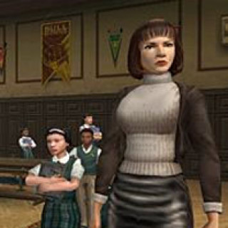
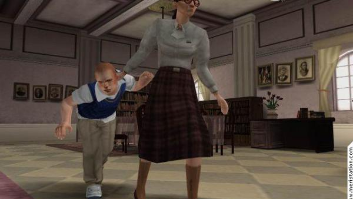
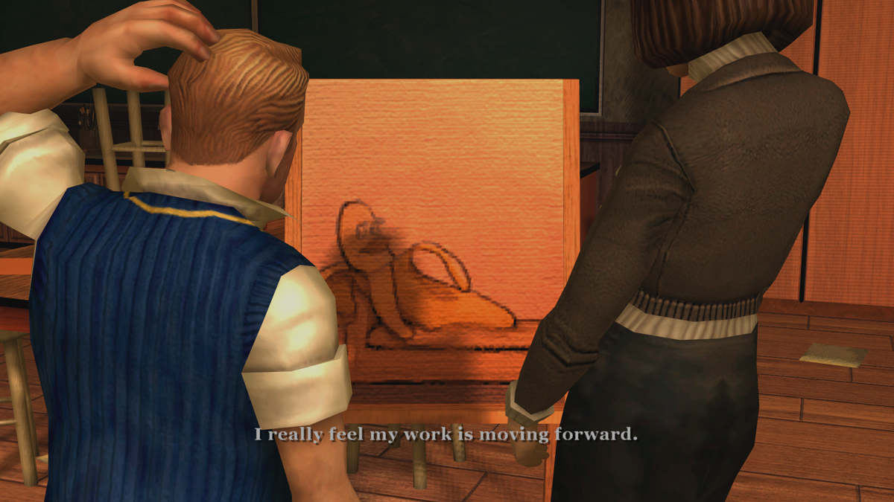

Players can take on the role of the main character, the passionate teacher who believes in
the power of games to improve education. The game have different levels (or stages), each representing a challenge
or obstacle that the teacher must overcome to introduce games into the classroom.

One level involves convincing skeptical colleagues and parents about the benefits of
game-based learning, while another level involves designing game-based lessons that align with the curriculum and
standards. The game also includes challenges such as addressing technical limitations or finding appropriate games
for different age groups and learning styles.

The player are rewarded for successfully completing each level with points, virtual currency,
or unlocking new game-based learning tools and resources. The game also incorporates feedback mechanisms to help the
player reflect on their teaching methods and improve their practice.
In addition to playing as the teacher, the game also features other characters such as
students, parents, and administrators who have different perspectives and motivations regarding game-based learning.
The player can interact with these characters to understand their concerns, build relationships, and negotiate
solutions.